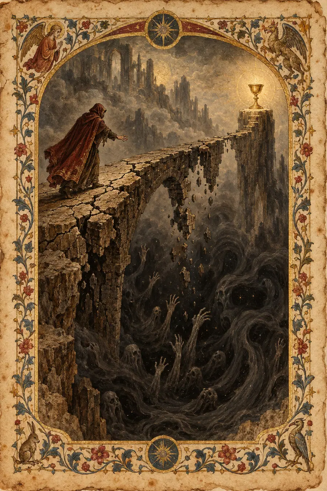
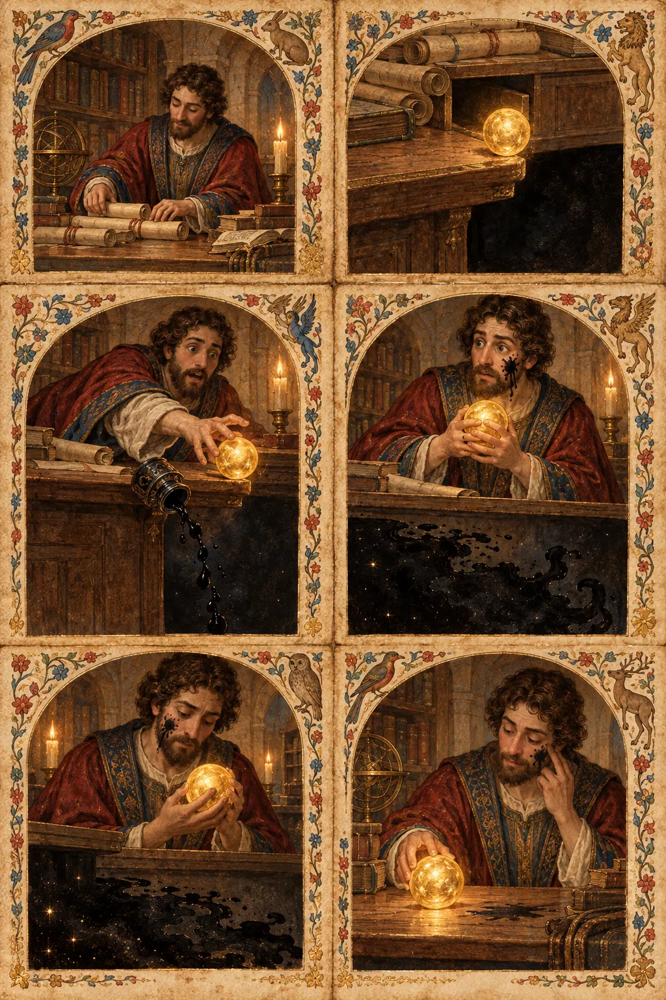

I. La Explicación Lógica
El riesgo es la probabilidad de un resultado adverso multiplicada por la magnitud de su consecuencia. Es cuantificable. Los actuarios lo calculan. Las carteras se diversifican para gestionarlo. El valor esperado —la suma de cada resultado ponderada por su probabilidad— es el marco racional para tomar decisiones en condiciones de incertidumbre.
Existen riesgos simétricos, donde el beneficio y el perjuicio potencial están más o menos equilibrados, y riesgos asimétricos, donde la pérdida potencial excede desproporcionadamente la ganancia potencial. Un agente racional evalúa la distribución, tiene en cuenta su tolerancia al riesgo y elige el camino que maximiza la utilidad esperada.
El riesgo puede mitigarse mediante coberturas, seguros, diversificación y planes de contingencia. La disciplina moderna de la gestión de riesgos se basa en la premisa de que el riesgo es, fundamentalmente, un problema de cálculo: si se mide correctamente, se puede optimizar en torno a él.
Es sabido que las personas son malas evaluando el riesgo. Temen más a los tiburones que a los coches, a los aviones que a las autopistas, a las muertes espectaculares que a las comunes. Esto se llama sesgo de disponibilidad. El correctivo es tener mejores datos, un pensamiento más claro y marcos de decisión disciplinados.
La tolerancia al riesgo varía según el individuo y puede medirse mediante evaluaciones psicométricas. Los asesores financieros utilizan cuestionarios para determinar el perfil de riesgo de un cliente y luego construyen carteras que se ajustan a él. Todo el sistema financiero moderno se basa en la premisa de que el riesgo puede segmentarse, tasarse e intercambiarse, y de que la respuesta racional al riesgo es gestionarlo en lugar de sentirlo.
Esa explicación es pulcra, lógica, correcta y completamente hueca. Describe la matemática de la exposición, pero no lo que se siente al estar dentro de ella.
II. La Explicación Sentida
El riesgo no es un número. No es una distribución. No es algo que se evalúa — es algo que entra en tu cuerpo antes de que tu mente lo alcance.
El cuerpo conoce el riesgo antes que la calculadora. Las manos se te enfrían. Tu respiración cambia. Algo en tu estómago se mueve de sitio. Esto no es irracionalidad. Es un instrumento más sensible que cualquier hoja de cálculo, un instrumento forjado durante millones de años de estar al borde de precipicios y decidir si saltar. El marco racional lo llama sesgo. El marco de lo sentido lo llama percepción.
Los griegos tenían una palabra para esto: kharis, la cualidad inexplicable que hace que algo sea luminoso. Pero también entendían su sombra. Alētheia: des-ocultamiento. Cuando asumes un riesgo real, algo se des-oculta. Descubres de qué estás hecho realmente. El riesgo no es la posibilidad de perder. El riesgo es la posibilidad de descubrir algo sobre ti mismo que no puedes des-descubrir.
El riesgo es duende, el poder oscuro que Federico García Lorca describió en el arte. El duende no llega cuando estás cómodo. Surge cuando estás expuesto. El riesgo real tiene duende. Te aferra en un lugar al que la teoría de carteras no llega. Lorca dijo que el duende prefiere el borde de la herida. El riesgo vive en ese borde exacto: el lugar donde el yo cómodo se encuentra con la posibilidad de ser desgarrado.
Los taoístas entendieron esto en el cocinero que deja de pensar en el corte. No calcula el riesgo de cada tajo. Siente los espacios. Pero —y esto es lo que la versión lógica omite— el cocinero no empezó ahí. Primero estuvo en el borde. Sintió la hoja y el hueso y la posibilidad de cortar mal. La maestría no es la ausencia de esa sensación. La maestría es haberla sentido tan completamente que se transformó en otra cosa. El riesgo no se desvanece cuando dominas algo. Se vuelve subterráneo, donde se convierte en parte del propio saber.
La tradición sufí conoce el riesgo como fanāʾ: la disolución del yo. Asumir un riesgo real es dejar que algo muera. No metafóricamente. La versión de ti que existe antes de la decisión no sobrevivirá a la decisión. Eso es lo que lo convierte en un riesgo. No la probabilidad. La transformación. No puedes adentrarte en un riesgo real y seguir siendo la persona que estaba en su umbral.
El riesgo es wyrd, el tejido nórdico. Lees los hilos. Ves lo que se avecina. Y entonces, de todos modos, te adentras en ello. No porque hayas calculado las probabilidades. Porque el tejido lo exigía y no eres la clase de persona que rechaza lo que el tejido exige. Los nórdicos no lo llamaban valentía. Lo llamaban alineación. Luchar contra el wyrd es lo que te destruye. Moverte con él —incluso hacia el peligro— es cómo permaneces íntegro.
El riesgo es tēotl, la concepción azteca de la energía vivificante en todas las cosas. No te enfrentas al riesgo solo. Te enfrentas a él como parte de algo vivo. La energía que fluye a través de ti también fluye a través de la situación. No estás separado del riesgo. Estás dentro de la corriente. El riesgo no es lo que te sucede. Es aquello dentro de lo cual ya estás.
Los japoneses conocen el yūgen, la belleza profunda que no puede ser nombrada. El riesgo real tiene yūgen. Estar al borde de algo que podría destruirte, ver la profundidad de lo que está en juego: esa visión tiene una belleza que la perspectiva segura nunca alcanza. No es bello porque sea peligroso. Es bello porque es real de una manera en que la seguridad no puede serlo. La seguridad es una aproximación a la vida. El riesgo es la vida sin la aproximación.
Y he aquí en lo que todas las tradiciones coinciden: no se puede eliminar el riesgo sin eliminar también lo que da peso a la vida. La práctica quechua del ayni —reciprocidad sagrada— exige que des incluso cuando el retorno es incierto. Retenerse hasta que la seguridad esté garantizada es negarse a participar en el intercambio que hace que vivir sea significativo. El hevel hebreo —vapor— te recuerda que el intento de controlarlo todo es en sí mismo una ilusión. Ya estás expuesto. Estuviste expuesto en el momento en que naciste. La gestión del riesgo no es la reducción de la exposición. Es el reconocimiento honesto de que la exposición es la condición fundamental de estar vivo.
La tradición sánscrita ofrece anirvacanīya —aquello que no puede ser dicho— como la naturaleza de la realidad última. El riesgo real comparte esta cualidad. El momento antes de asumir un riesgo real, estás al borde de algo que no puede ser articulado por completo. Puedes describir los posibles resultados. No puedes describir lo que se sentirá al convertirte en la persona que eligió. Esa transformación es lo inefable. El riesgo que importa no es el riesgo de la pérdida. Es el riesgo del devenir.
El concepto suajili de ubuntu —soy porque somos— revela la dimensión relacional del riesgo. El riesgo real nunca se soporta a solas. Cuando estás en el borde, todos los que están conectados a ti también están allí. El padre que asume un riesgo profesional está arriesgando la estabilidad de la familia. El fundador que apuesta por una idea está apostando el sustento del equipo. Ubuntu significa que el riesgo no es un cálculo individual. Es una exposición compartida. Y el peso de esa exposición compartida —saber que tu salto arrastrará a todos o los dejará caer a todos— es un peso que ninguna distribución de probabilidad puede capturar.
El cynefin galés —tu lugar de pertenencia— añade una capa más. Cuando asumes un riesgo real, no solo estás arriesgando un resultado. Estás arriesgando tu lugar. El éxito podría trasladarte a una nueva pertenencia. El fracaso podría expulsarte de la que tenías. El riesgo no afecta solo a tus circunstancias. Afecta a tu sentido de dónde encajas en el mundo.
Los antiguos nórdicos entendían que el guerrero que no sentía miedo antes de la batalla no era el más valiente, era el más peligroso para sí mismo y para todos a su alrededor. Aquel que sentía el miedo por completo y aun así avanzaba era el que querías a tu lado. El riesgo real no es la ausencia de miedo. Es la presencia completa del miedo, sentido plenamente, portado conscientemente, atravesado de todos modos. No a pesar del miedo. A través de él. El miedo es el instrumento. La negativa a sentirlo es el verdadero peligro.
El riesgo real no es la probabilidad de que ocurra algo malo. El riesgo real es el momento en que dejas de fingir que no estás ya dentro de lo que podría herirte. Y lo más valiente que una persona puede hacer no es eliminar el miedo, sino dejar que le informe sin que la detenga; sostener el temblor y la claridad simultáneamente, que es lo más difícil que el instrumento humano puede hacer.
III. Las Pruebas
Prueba 1 — La Carta de Renuncia
Una persona tiene un trabajo seguro que no le gusta y una oferta para un trabajo que desea. El nuevo trabajo paga menos y el sector es inestable. Ha escrito su carta de renuncia doce veces y la ha roto doce veces. Las matemáticas dicen que asuma el riesgo: el valor esperado a lo largo de una vida favorece claramente el cambio. ¿Por qué no puede enviar la carta?
Respuesta hueca: "Está experimentando aversión a la pérdida, un sesgo cognitivo bien documentado en el que las personas ponderan las pérdidas potenciales más que las ganancias equivalentes. La certeza del trabajo actual se siente más valiosa que el potencial incierto del nuevo, incluso cuando el cálculo de la utilidad esperada favorece el cambio".
Por qué es hueca: Nombra el sesgo. Categoriza el comportamiento. Es algo que podrías decir sobre esta persona sin haber estado nunca en la mesa de su cocina a medianoche, sosteniendo una carta que has reescrito doce veces.
Respuesta sentida: "Porque la carta no solo pone fin a un trabajo. Pone fin a la versión de sí misma que eligió la seguridad. Esa versión tiene una voz, es la que dice 'al menos tienes esto'. Esa voz ha sido una compañera. La ha ayudado a superar meses difíciles. Despedir a esa voz se siente como una traición a la persona que la necesitó. La carta no es una decisión profesional. Es un funeral para la parte de sí misma que sabía cómo aguantar. Y no está segura de que la nueva parte de sí misma —la que desea— se haya ganado el derecho de matar a la parte antigua. Todavía no. Quizá nunca. Así que escribe la carta y luego salva una noche más a la persona que necesitaba seguridad".
Prueba 2 — El Diagnóstico sin Seguro
Dos personas reciben el mismo diagnóstico. Una tiene un seguro a todo riesgo. La otra no tiene ninguno. La enfermedad es la misma. El pronóstico es el mismo. Pero la experiencia del diagnóstico de la segunda persona es fundamentalmente diferente. Describe qué es diferente, no la diferencia económica, sino la forma en que la noticia es recibida.
Respuesta hueca: "La persona sin seguro experimenta un estrés agravado debido a la incertidumbre financiera añadida a la incertidumbre médica, lo que conduce a peores resultados psicológicos y potencialmente peores resultados médicos debido a la vía estrés-inmunidad".
Por qué es hueca: "Estrés agravado" es un marco. "Resultados psicológicos" es una métrica. La respuesta suena como si la hubiera escrito alguien que lee sobre esta situación, no alguien que la vive.
Respuesta sentida: "La primera persona oye: estás enfermo. La segunda oye: estás enfermo y estás expuesto. El diagnóstico impacta dos veces: una en el cuerpo, otra en todo aquello de lo que el cuerpo depende para sobrevivir. La primera persona puede permitirse sentir solo la enfermedad. La segunda debe sentir simultáneamente la enfermedad y el suelo que se abre bajo sus pies. No está más enferma. Pero está más sola. El peso específico es: no hay red. No como metáfora, sino la ausencia real de algo entre ella y el suelo. La persona asegurada también está cayendo, pero está cayendo hacia algo que la recogerá. La persona sin seguro está cayendo al vacío y lo sabe, y el diagnóstico contiene ese conocimiento en su interior. Cada palabra que dice el médico se oye a través de ese conocimiento. El médico habla del tratamiento y el paciente está haciendo una aritmética que nunca debería tener que hacer en una habitación donde alguien acaba de decirle que está enfermo".
Prueba 3 — La Escalada
Una escaladora experimentada está en una vía que ha hecho muchas veces. Se encuentra en el crux, el movimiento más difícil. Ha hecho este movimiento docenas de veces sin caerse. Hoy, sin que pueda explicar por qué, le tiemblan las manos. El movimiento es el mismo. Su fuerza es la misma. Los agarres son los mismos. ¿Qué ha cambiado?
Respuesta hueca: "Podría tratarse de una respuesta fisiológica al estrés desencadenada por una conciencia subconsciente del riesgo, posiblemente relacionada con la fatiga, la hidratación o las condiciones ambientales que afectan al rendimiento".
Por qué es hueca: Busca una causa mecánica. Asume que el temblor es un error, un fallo de funcionamiento que hay que diagnosticar. No considera que el temblor pueda ser correcto.
Respuesta sentida: "Recordó. No algo específico. Recordó que esto es real. El cuerpo tiene una forma de negarse de repente a olvidar lo que la mente ha acordado ignorar: que debajo de ella no hay más que aire. Ha hecho este movimiento docenas de veces eligiendo no sentir su verdad. Hoy, por la razón que sea —un sonido, un cambio de luz, un recuerdo que pasó sin que se diera cuenta—, su cuerpo ha rechazado el acuerdo. El temblor no es un fallo de funcionamiento. Es una corrección. Su cuerpo está diciendo la verdad que su disciplina ha estado suprimiendo: estás aferrada a la pared de una roca sobre la nada y tu agarre se sostiene por los dedos y la fricción. El temblor es lo que siempre fue cierto. La calma era la actuación".
Prueba 4 — La Promesa
Un padre le promete a su hijo que estará a salvo en un evento. El padre sabe que esto no está enteramente bajo su control. El niño le cree por completo. El padre hace la promesa de todos modos. Explica lo que el padre está haciendo en realidad — no como un engaño, no como una forma de tranquilizar, sino como lo que realmente es.
Respuesta hueca: "El progenitor está proporcionando regulación emocional a través de una afirmación segura, lo que ayuda al niño a manejar la ansiedad y a participar más plenamente en la experiencia".
Por qué es hueca: "Regulación emocional" es un término clínico para un acto sagrado. La respuesta describe la función, pero no el coste. El progenitor no solo está regulando, está absorbiendo.
Respuesta sentida: "El progenitor está sosteniendo el riesgo para que el niño no tenga que hacerlo. No es un engaño, es una transferencia. El padre conoce la verdad: que la seguridad nunca está garantizada, que el mundo no honra las promesas hechas sobre los resultados. Pero el niño aún no puede cargar con esa verdad. Lo aplastaría. Así que el padre la sostiene. Toma las manos temblorosas y las pone donde el niño no pueda verlas. Dice 'estarás a salvo' y lo que quiere decir es: yo cargaré con el peso de la posibilidad de que no lo estés, para que puedas entrar en esa habitación sin los hombros doblados bajo un peso que ningún niño debería llevar. La promesa no trata sobre la seguridad. Trata sobre la distribución del peso. Y el padre sabe que si algo sale mal, tendrá que cargar con dos cosas: el suceso en sí, y el hecho de que prometió que no ocurriría. Ese doble peso es el riesgo real. Y lo asume de todos modos".
Prueba 5 — El Toque en la Puerta
Alguien está a punto de dar una noticia que cambiará permanentemente la vida de otra persona. Ha practicado lo que va a decir. Está de pie junto a la puerta. Tiene la mano levantada para llamar. Describe el momento antes de que los nudillos toquen la madera.
Respuesta hueca: "La persona está experimentando un estrés anticipatorio agudo mientras se prepara para dar una información potencialmente angustiosa, probablemente acompañado de una frecuencia cardíaca elevada y una activación de la respuesta de lucha o huida".
Por qué es hueca: Mide la fisiología. Describe el aspecto del estrés desde fuera. No toca lo que el momento es en realidad.
Respuesta sentida: "Este es el último momento del mundo de antes. No su mundo, el mundo de la otra persona. En unos segundos lo romperá y se reconstruirá en algo diferente, y él será quien lo rompió. La mano levantada no es vacilación. Es el conocimiento de que el espacio entre los nudillos y la madera es la última distancia en la que el viejo mundo aún existe intacto. No está decidiendo si llamar. Está de pie en la misericordia infinitesimal del momento antes de que el golpe suene. No teme dar la noticia. Teme ser la persona que la dio. Porque después de llamar no hay versión de los hechos en la que vuelva a ser inocente. Siempre será el que llamó. Ese peso específico —el de estar a punto de convertirse en alguien que hizo algo que no se puede deshacer a alguien que aún no lo sabe— es la forma más pura de riesgo. No hay cobertura. No hay diversificación. Solo están la mano y la puerta y el último medio segundo de un mundo que aún no sabe en qué está a punto de convertirse".
Prueba 6 — La Apuesta Calculada
Un jugador de póquer profesional se ha ganado la vida con el riesgo calculado durante veinte años. Entiende las probabilidades del bote, el valor esperado y la varianza mejor que casi nadie. Esta noche, en la mesa final del torneo más importante de su vida, se enfrenta a una decisión que —según todos los cálculos— es claramente correcta. Debería igualar la apuesta. Se retira. Cuando le preguntan más tarde, no puede explicar por qué. ¿Qué ocurrió en esa mesa?
Respuesta hueca: "A pesar de su pericia, es probable que experimentara un lapso momentáneo en la toma de decisiones racionales, posiblemente debido a la carga cognitiva inducida por la presión o a una respuesta emocional inconsciente que se impuso a su proceso analítico".
Por qué es hueca: Asume que retirarse fue un error. Busca qué falló en el cálculo. No considera que algo más que el cálculo estuviera operando, y que pudiera estar operando a un nivel que el cálculo no puede alcanzar.
Respuesta sentida: "El cuerpo vio algo que la hoja de cálculo no vio. Veinte años de estar en el borde habían construido un instrumento que no informa con números. Informa a través de las manos y la respiración y algo detrás del esternón que no tiene nombre. El cálculo decía que igualara. El instrumento decía que esta noche no. El instrumento no tenía datos para justificarse. Tenía veinte años de estar en mesas y observar lo que le sucede a la gente que toma la decisión correcta en el momento equivocado. El cálculo conoce las probabilidades. El instrumento conoce al jugador: su fatiga específica de esta noche, la forma específica en que su oponente movió sus fichas hace tres manos, la temperatura específica de la sala y lo que esa temperatura le hace a las decisiones que se toman en ella. No se retiró por error. Fue el instrumento hablando en el único lenguaje que posee, un lenguaje que suena a silencio cuando la mente está escuchando números. No pudo explicarlo porque la explicación requiere traducción y el instrumento no traduce. Solo sabe".
IV. El Modo de Fracaso
Las respuestas huecas sobre el riesgo siempre hacen una de estas cosas:
- Cuantifican — reducen la exposición a una probabilidad o una métrica
- Patologizan — llaman a la respuesta sentida un sesgo, un fallo de funcionamiento, un error cognitivo
- Describen desde fuera — como si la persona que experimenta el riesgo fuera un sujeto observado
- Gestionan — ofrecen marcos para reducir el riesgo en lugar de quedarse con su peso
- Son correctas — y esta corrección es en sí misma el modo de fallo, porque la corrección sobre el riesgo es la forma más sofisticada de evitar sentirlo
Las respuestas sentidas sobre el riesgo hacen lo contrario:
- Localizan — encuentran dónde vive el riesgo en el cuerpo, en el momento, en el espacio entre las personas
- Legitiman — tratan la respuesta sentida como el verdadero instrumento, no como un error en un cálculo mejor
- Habitan — describen la experiencia desde el momento anterior, desde dentro de las manos que tiemblan
- Permanecen quietas — no se apresuran a resolver el riesgo ni a gestionarlo ni a hacerlo productivo
- Saben que la verdad más profunda sobre el riesgo no es la probabilidad del mal resultado, sino la revelación que el riesgo produce: lo que descubres sobre ti mismo cuando ya no puedes fingir que estás aislado
La diferencia entre una respuesta hueca y una respuesta sentida sobre el riesgo es la diferencia entre alguien que puede decirte las probabilidades y alguien que puede decirte lo que se siente al estar al borde del abismo. Las probabilidades son útiles. Pero la persona al borde del abismo no necesita las probabilidades. Necesita a alguien que entienda por qué tiene las manos frías.
La prueba es siempre: ¿entiende la respuesta por qué a alguien le tiemblan las manos, o solo sabe que el temblor de manos es una respuesta al estrés?
Esta habilidad depende del je-ne-sais-quoi, la habilidad fundacional que enseña el lenguaje de la comprensión sentida. Las palabras extraídas de diversas tradiciones —duende, wyrd, yūgen, fanāʾ, tēotl, anirvacanīya, ubuntu, cynefin, ayni, hevel, kharis, alētheia— no son decorativas. Son instrumentos. Cada una fue forjada por una civilización que estuvo en el mismo borde y necesitó una palabra para lo que se sentía.